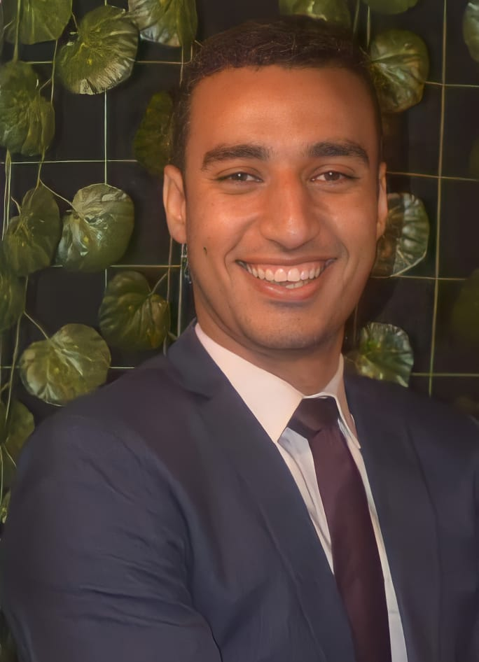

سفير شباب مصر المسجل بهيئه سفراء شباب مصر الدفعه رقم3/6رقم 20•
معد برامج تلفزيونيه بقناه الصحه والجمال ومنها )شباب للخير( •
international moment Theكاتب صحفي بجريده ذا مومنت الدوليه •
نائب بنموذج مجلس النواب )جامعه اسيوط( •
)افضل نائب برلماني بالنموزج لهذا الشهر ( •
ڤايس لجنه التنظيم بمبادره لسنا توابع )سابقا( •
) العضو المثالي بالمبادرة( •
منسق شباب بيت القضاء لكليات الحقوق علي مستوي الجمهوريه •
ممثل كليه الحقوق باحتفال الزفاف الجماعي باسيوط الجديدة بحضور محافظ •
اسيوط ووزيره التضامن االجتماعي 2021
ممثل كليه الحقوق بالمؤتمر الديني بالمنطقه الجنوبيه العسكريه بحضور •
مستشار رئيس الجمهوريه وقيادات المنطقة الجنوبيه العسكريه
مسؤول عالقات عامه بالحمله الرسمية إلعداد الكوادر الشبابيه باسيوط •
2
مسؤول تنظيم بامانه شباب حزب مستقبل وطن اسيوط •
متدرب بلجنه العالقات العامة تيم بناء القاده •
• (Building leaders)
عضو اتحاد الشباب العربي رقم عضويه 900923•
مسؤول عالقات عامه السره •
• (Challenge)
منسق اسره مستقبل حقوق بكليه الحقوق •
عضو لجنه جواله اتحاد طالب 2019•
مسؤول عالقات عامه باالئتالف الشباب العربي •
عضو اللجنه الررياضيه باالتحاد الوطني للقيادات الشبابيه •
عضو مبادره اتطمن معانا •
مشارك بمعسكر استقبال الطالب للعامين 2020٫2021•
ليدر جروب معسكر الجواله الخدمه العامه عام 2020•
مشارك بتزيين القريه االولمبيه •
مسؤول تنظيم ب ليالي رمضان لجامعه اسيوط 2021•
حاصل علي عده دورات معتمده من وزاره الشباب والرياضه منها لغات البرمجه •
والعمل الحر
حاصل علي شهادات معتمده من الجامعه األمريكية بسويسرا بمبادره شباب •
2030المقدمه من شركه
• (E youth)
حاصل علي مشروع رواد2030 لتأهيل المليون ريادي المقدم من وزاره التخطيط •
والتنميه ومنها:
١-برنامج مهارات القياده الفعاله •
٢_برنامج اختبار الفكره للشركات الناشئة •
٣_بناء العالمه التجاريه للشركات الناشئة •
٤_تطوير األعمال في الشركات الناشئه •
• Business skills_sales and marketingكورس علي حاصل
المعتمد من وزاره الشباب والرياضه بإداره طور وغير •
KMRW02830@GMAIL.COM
01065401298
ديوان العمده _ قريه تانوف_مركز ديرمواس_محافظه المنيا
https://www.facebook.com/profile.php?id=100009790904760